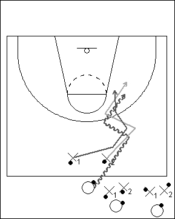

Catégorie : DRIBBLE (Dr-006)
Déroulement
- Les joueurs sont par groupes de trois. Tous possèdent un ballon.
- Le premier groupe part du milieu du terrain. Il se compose d’un attaquant et de deux défenseurs. L’attaquant essaie de battre les deux défenseurs qui doivent également dribbler sans cesse; pour se faire, il multiplie donc les changements de rythme et de direction. Dès que le panier est marqué ou que le ballon est perdu par l’attaquant, les trois joueurs suivants débutent l’exercice.
- Les trois premiers joueurs reviennent ensuite à la ligne médiane. X1 restera en défense à la place de X2. Celui-ci sera le futur attaquant, tandis que le premier attaquant jouera à la place de X1 en défense.
Coaching points
- Sanctionner toutes les fautes, et en particulier celles des défenseurs.
- On peut aussi à un certain moment limiter le temps pour l’exécution du un contre deux.